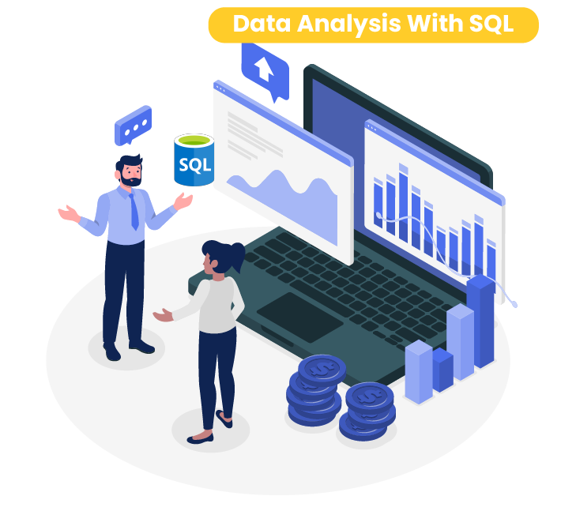

The Sales and Customers Dashboard is a comprehensive Tableau project designed to analyze sales performance and customer activity. The project features a two-page interactive dashboard that provides valuable insights for businesses aiming to optimize sales strategies and customer engagement. By leveraging Tableau's capabilities, the dashboard offers a visually appealing and intuitive exploration of key metrics.


This project focuses on preparing a layoffs dataset obtained from Kaggle to prepare it for accurate and efficient analysis. The process involved creating structured tables, standardizing data formats, and removing inconsistencies to ensure the dataset's quality and usability. The project is designed for both technical and non-technical audiences interested in understanding data cleaning and preparation techniques.

This project demonstrates the use of Python for web scraping to extract car listing information from the website Cars45.com. The primary goal of the project was to help a new car dealership gain real market insights into car prices, enabling them to price their inventory competitively and accurately. By combining Python libraries such as requests, BeautifulSoup, and pandas, the project efficiently fetches, processes, and saves the data for actionable analysis.

The Patient Wait List Dashboard is an interactive Power BI project designed to provide actionable insights from a healthcare dataset sourced from Kaggle. This dataset includes approximately 200,000 rows of patient wait list information split into two categories: Inpatient (patients admitted to the hospital during treatment) and Outpatient (patients treated without hospital admission). The dashboard offers a comprehensive analysis of patient wait times, historical trends, and specialty-level statistics, assisting healthcare professionals in making informed decisions.

This project analyzes global layoff trends using SQL to extract meaningful insights from a dataset containing detailed layoff data. The analysis focuses on understanding patterns and uncovering key metrics related to layoffs across various industries, locations, and time periods. The project is structured to provide insights for both technical and non-technical audiences.

This project utilizes Python to scrape key stock information from Yahoo Finance, providing essential data to inform a dollar-cost averaging investment strategy. The code has been automated to run from Monday to Friday, ensuring up-to-date insights on selected stocks. By leveraging Python libraries such as requests, BeautifulSoup, and pandas, the project efficiently collects, processes, and saves stock data for analysis and decision-making.

The Data Professionals Survey Dashboard is a Power BI project that delivers meaningful insights derived from a survey dataset created by AlexTheAnalyst. The dataset captures the experiences, preferences, and challenges faced by data professionals and individuals in the data field. After cleaning and transforming the dataset, this project extracts valuable insights that serve as a resource for current and aspiring data professionals, offering a comprehensive view of the industry.